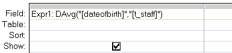

Return the average from a set of numeric values in a set of records.
Syntax
DAvg ( expression, domain, [criteria] )
=DAvg("[Field]", "Table")
Key
expression The numeric values to average.
domain The set of records, a table or a query name.
criteria Equivalent to an (optional) WHERE clause.
Any field that is included in criteria must
also be a field in domain.
The DAvg() function can be used in VBA or in an SQL query.
Examples
In a query:

In VBA:
intAveragePrice = DAvg("UnitPrice", "T_Orders", "SupplierID = 64 ")
“If you are planning for a year, sow rice; if you are planning for a decade, plant trees; if you are planning for a lifetime, educate people” ~ Chinese Proverb
Related:
Avg (SQL) - Average
Eavg (Allen Browne) - Get the average of just the TOP values.